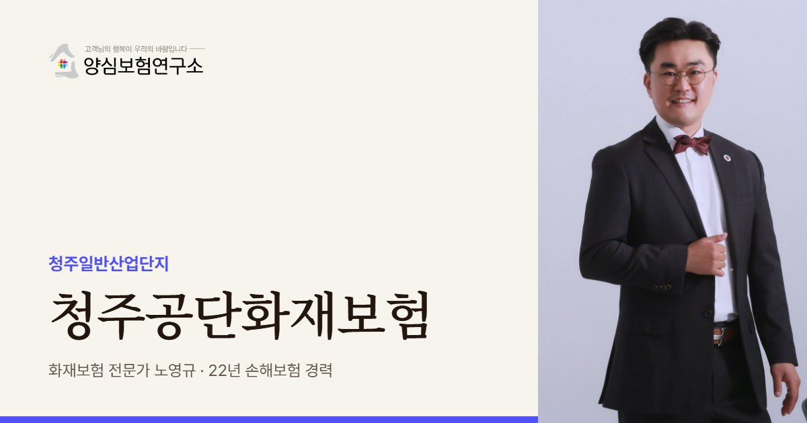

청주공단은 반도체·전자 기업과 석유화학 공장이 오래 함께해 온 산단입니다. 노영규 대표가 공정의 가스·약품 위험과 이웃 공장의 업종을 함께 따져 보장을 설계합니다.
청주공단 안내
청주공단, 왜 공장화재보험이 중요할까요?
청주공단화재보험은 청주시 흥덕구의 청주일반산업단지에 입주한 공장이 화재와 가스 사고로 입는 재산 손해와 휴업 손실, 이웃에 대한 배상책임을 대비하는 보험을 뜻합니다. 청주공단은 1969년 청주시서부공업단지로 첫 삽을 뜬 뒤 1989년까지 1~4단지를 차례로 조성한 충북의 대표 산단입니다.
관리공단의 2025년 6월 가동 현황을 보면 비제조업 183개, 전기전자 182개, 기계 125개, 석유화학 94개사 순입니다. 2024년 생산액은 13조 5,340억 원이었고, 오래전부터 대형 전자·화학 계열 기업이 중심을 이뤄 왔습니다. 전자 공정의 가스·약품과 석유화학 공정의 원료가 한 산단 안에 있어, 화재뿐 아니라 가스 누출과 폭발까지 함께 봐야 합니다.
1단지는 1969년에 조성을 시작해 50년이 넘었고, 2015년 노후산단 경쟁력강화사업에 선정되면서 전국 최초의 민간 주도 자율개발형 재생사업이 시작됐습니다. 대신로 확장과 노상주차 확충 같은 기반시설 정비를 마쳤고, 스마트그린산단 사업으로 통합관제센터와 에너지 관리 시스템도 도입되고 있습니다. 기반시설은 좋아졌지만 개별 공장 건물의 노후화는 공장마다 따로 점검해야 합니다.
2018년 8월에는 산단 내 공장 기숙사 화재로 근로자 한 명이 숨졌습니다. 공장에 기숙사나 휴게시설이 딸려 있다면 재산 보험과 별개로 사람의 안전과 배상 문제를 함께 준비해야 한다는 점을 보여 준 사고입니다. 참고로 오창읍에서 난 2차전지·플라스틱 공장 화재들은 청주공단이 아닌 다른 산단의 사고입니다.
청주공단 공장이라면 원청과 협력사의 관계도 확인해 보세요. 대형 전자 기업 주변의 협력 공장은 원청의 생산 일정에 맞춰 재고와 인력을 운영하기 때문에, 공장이 멈추면 납품 차질이 곧바로 거래 관계에 영향을 줍니다. 휴업손해 보상 기간은 원청 납기와 대체 생산 가능성에 맞춰 정하는 것이 현실적입니다.
2018.08 청주산단 공장 기숙사 화재로 근로자 1명이 숨졌습니다. (이데일리)
주요 위험
청주공단화재보험에서 먼저 볼 위험
전자 공정 가스·약품
반도체·전자 공정의 가스와 약품은 화재와 누출 피해를 함께 봐야 합니다.
석유화학 공정
원료와 중간재를 다루는 공정은 폭발 손해의 보상 여부를 확인합니다.
기숙사·휴게시설
공장에 딸린 숙소는 사람의 안전과 배상 문제를 따로 준비합니다.
50년 된 1단지
오래된 건물은 전기 설비와 구조를 정확히 알려야 보상 다툼이 줄어듭니다.
기계 설비
기계 공장은 설비 가입금액과 기계 고장 위험을 함께 따집니다.
음식료 공정
튀김·건조 설비와 덕트는 기름때 화재가 잦아 청소 기록을 남깁니다.
※ 실제 보장 여부와 한도, 면책 사항은 가입하는 상품의 약관과 공장 현황에 따라 달라집니다.
방문 상담
청주공단 직접 방문 상담
청주공단은 1~4단지가 흥덕구 여러 동에 걸쳐 있습니다. 공장이 속한 단지의 연식과 이웃 공장의 업종, 기숙사 여부를 함께 확인하며 방문 상담합니다.
꼭 확인할 점검 항목
청주공단화재보험 점검 리스트
- 소속 단지와 연식1~4단지 중 어디인지와 건물 준공 연도를 확인합니다.
- 가스·약품 보관전자·화학 공정의 가스와 약품 보관 현황을 정리합니다.
- 기숙사·휴게시설숙소가 있다면 소방 설비와 대피 동선을 점검합니다.
- 이웃 공장 업종석유화학 공장과의 거리를 확인합니다.
- 덕트·배기 설비음식료·도장 공정의 덕트 청소 기록을 확인합니다.
고객 후기
실제 계약고객 만족 사례


※ 실제 계약고객과 나눈 카카오톡 상담과 후기 일부이며, 개인정보는 가렸습니다.
지역 상담 Q&A
청주공단화재보험 Q&A
청주공단 전자 공장은 화재보험에서 무엇을 봐야 하나요?
설비 손해와 휴업 기간입니다. 전자 공정은 연기와 오염에 민감해 정밀 설비가 멈추기 쉽고, 가스·약품 누출까지 겹치면 재가동이 오래 걸립니다.
공장 기숙사도 화재보험에 포함하나요?
건물과 시설은 목적물에 포함할 수 있고, 거주 근로자의 신체 피해는 별도의 배상책임 담보로 준비해야 합니다.
오창에서 난 화재들도 청주공단 사고인가요?
아닙니다. 오창읍 화재는 다른 산단에서 난 사고이고, 청주공단은 흥덕구 송정·향정·복대동 일원의 청주일반산업단지입니다.
청주공단 공장에서 가스 누출만 있고 불은 안 났다면 보상되나요?
화재나 폭발이 없는 누출 손해는 일반 화재보험의 보상 대상이 아닐 수 있습니다. 가스를 다루는 공정이라면 누출로 인한 배상책임과 재산 손해를 어떤 담보로 볼지 가입 단계에서 확인해야 합니다.
가까운 산단 화재보험
청주공단 공장, 가스와 약품까지 보험이 알고 있나요?
공정의 가스·약품과 기숙사 여부를 함께 보고 재산·휴업·배상 보장을 정리해 드립니다.